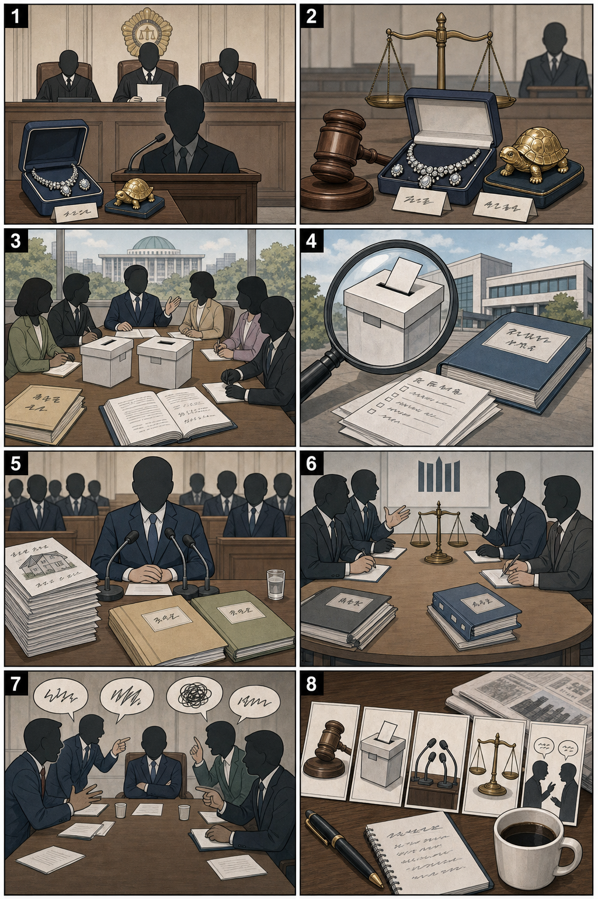

1
미군, 이란 드론·미사일 기지 공습 보도
내용요약 미국이 이란의 선박 공격을 휴전 위반으로 지목한 뒤 이란 드론·미사일 기지를 직접 공습했다는 보도입니다. 호르무즈 해협 선박 안전 문제도 함께 쟁점화되고 있습니다.
예상여파 휴전 합의의 안정성이 흔들릴 가능성이 있으며, 에너지 가격과 해상 운송 보험료 변동성이 커질 수 있습니다.
2026년 6월 27일 · 미국증시 · 세계뉴스 · 국내뉴스
투자권유 아님 / 참고용 정보입니다.
기준 거래일은 오전 보고서 작성 시점에서 확인 가능한 가장 최근 완료 한국 정규장입니다. 표의 등락률은 모두 전일 종가 대비 등락률입니다.
| 종목 | 기준 거래일 | 전일 종가 → 기준일 종가 | 전일 종가 대비 등락률 | 출처 링크·출처 확인 시각 |
|---|---|---|---|---|
| SK하이닉스 | 2026.06.26 정규장 전일: 2026.06.25 | 2026.06.25 종가 2,917,000원 → 2026.06.26 종가 2,673,000원 | 전일 종가 대비 -8.36% 하락 | 출처보기 확인: 2026-06-27 07:13:48 KST |
| 삼성전자 | 2026.06.26 정규장 전일: 2026.06.25 | 2026.06.25 종가 358,500원 → 2026.06.26 종가 339,500원 | 전일 종가 대비 -5.30% 하락 | 출처보기 확인: 2026-06-27 07:13:48 KST |
| 삼성바이오로직스 | 2026.06.26 정규장 전일: 2026.06.25 | 2026.06.25 종가 1,386,000원 → 2026.06.26 종가 1,343,000원 | 전일 종가 대비 -3.10% 하락 | 출처보기 확인: 2026-06-27 07:13:48 KST |
| 종목 | 테마 | 연결 이유 | 체크포인트 |
|---|---|---|---|
| SK하이닉스 000660.KS | AI 메모리/HBM | 미국 AI·메모리 뉴스가 이어질 때 국내 HBM 대표주로 연결됩니다. | 외국인 수급, HBM 가격, 미국 반도체주 흐름 |
| 삼성전자 005930.KS | 대형 반도체/메모리 | 메모리 업황과 대형주 수급의 대표 프록시입니다. | DRAM·NAND 가격, 고객사 인증, 기관 수급 |
| 흥구석유 024060.KQ | 호르무즈/국제유가 | 호르무즈 긴장과 유가 반등 뉴스가 국내 에너지 테마로 이어질 수 있습니다. | WTI·브렌트, 중동 헤드라인, 테마 과열 여부 |
내용요약 미국이 이란의 선박 공격을 휴전 위반으로 지목한 뒤 이란 드론·미사일 기지를 직접 공습했다는 보도입니다. 호르무즈 해협 선박 안전 문제도 함께 쟁점화되고 있습니다.
예상여파 휴전 합의의 안정성이 흔들릴 가능성이 있으며, 에너지 가격과 해상 운송 보험료 변동성이 커질 수 있습니다.
내용요약 베네수엘라 강진 이후 사망자와 부상자가 늘었다는 보도입니다. 발전소와 항구 등 기간시설 피해, 장비 부족에 따른 구조 지연도 함께 전해졌습니다.
예상여파 국제 구호와 의료·식수 지원 수요가 커질 수 있으며, 향후 내진 기준과 공공 인프라 복구가 주요 과제가 될 전망입니다.
내용요약 프랑스 등 유럽 여러 지역에서 40도를 넘는 폭염이 관측되고, 일부 지역은 역대 최고기온 보도가 나왔습니다. 폭염은 동쪽으로 확산되는 흐름입니다.
예상여파 전력 수요, 교통 운행, 취약계층 보건 부담이 커질 수 있습니다. 냉방 인프라와 기후 적응 정책 논의도 강화될 가능성이 있습니다.
내용요약 우크라이나의 대규모 드론 공습 이후 러시아 병합 크림반도에 비상사태가 선포됐다는 보도와 함께, 러시아 석유 판매 수익을 우크라이나 지원에 활용하는 논의가 전해졌습니다.
예상여파 러시아 에너지 인프라 방어와 제재 회피 경로가 더 큰 쟁점이 될 수 있습니다. 국제 유가와 전쟁 비용 논쟁에도 영향을 줄 가능성이 있습니다.
내용요약 제7호 태풍 메칼라와 제8호 태풍 히고스가 동시에 북상하면서 일본 열도에 폭우와 교통 차질 가능성이 제기됐습니다. 한반도 영향 가능성은 낮다는 보도도 있습니다.
예상여파 일본 여행·항공·철도 일정에 변동이 생길 수 있고, 대만과 일본 남부 지역의 침수·강풍 피해 점검이 필요합니다.

내용요약 김건희 씨 관련 1심에서 징역 7년이 선고됐다는 보도입니다. 재판부는 고가 장신구와 금거북이 등이 청탁 명목으로 제공됐다고 판단했다는 내용이 핵심입니다.
예상여파 남은 재판과 항소 절차, 관련 정치권 공방이 이어질 가능성이 큽니다. 사법 판단의 범위와 알선수재 해석을 둘러싼 논쟁도 계속될 수 있습니다.
내용요약 여권이 선거관리위원회 개편 방안으로 위원장 상임화, 상임위원 확대, 감사 근거 마련 등을 거론했습니다. 일부에서는 개헌을 통한 조직 개편 주장도 보도됐습니다.
예상여파 선거관리 독립성과 책임성 사이의 균형이 쟁점이 될 전망입니다. 실제 개헌·법률 개정 논의로 이어질 경우 여야 대치가 장기화될 가능성이 있습니다.
내용요약 한성숙 총리 후보자 인사청문회에서 주택 임대·매매 거래의 적정성, 이해관계 가능성, 플랫폼 독과점 정책 대응 능력 등이 쟁점으로 제기됐습니다.
예상여파 청문보고서 채택 여부와 추가 자료 요구가 관건입니다. 후보자 개인 검증과 함께 플랫폼 규제·공정거래 정책 방향도 정치권 의제로 확대될 수 있습니다.
내용요약 정청래 의원과 김민석 의원 발언을 둘러싸고 검찰 보완수사권 폐지 및 검찰개혁안 처리 시점이 정치 쟁점으로 부각됐습니다. 관련 법안 발의와 당내 입장 차이도 보도됐습니다.
예상여파 수사 공백 방지 장치, 경찰 수사 역량, 검찰의 보완수사 범위가 핵심 쟁점입니다. 법안 심사 과정에서 법조계와 시민사회 의견이 크게 갈릴 가능성이 있습니다.
내용요약 국민의힘 지도부가 일부 인사를 겨냥해 징계 가능성을 언급했고, 당내에서는 반발 발언이 이어졌다는 보도입니다. 지도체제와 노선 갈등이 다시 부각됐습니다.
예상여파 당내 결속과 지도부 리더십이 시험대에 오를 수 있습니다. 징계 절차가 현실화될 경우 계파 갈등, 여론조사 흐름, 향후 원내 전략에 영향을 줄 가능성이 있습니다.
